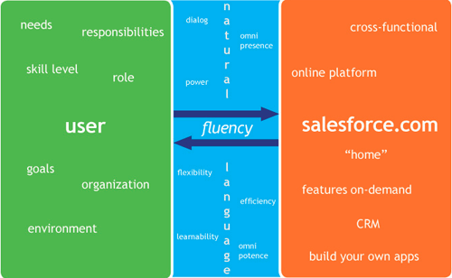
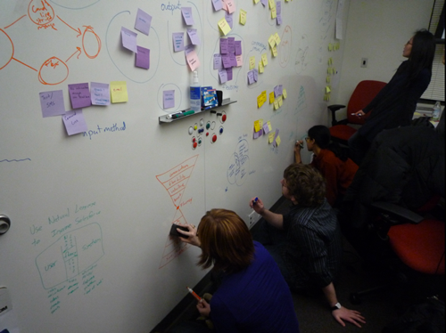
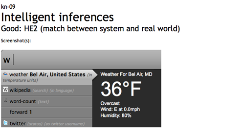
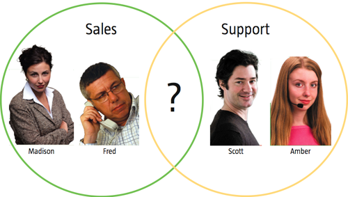
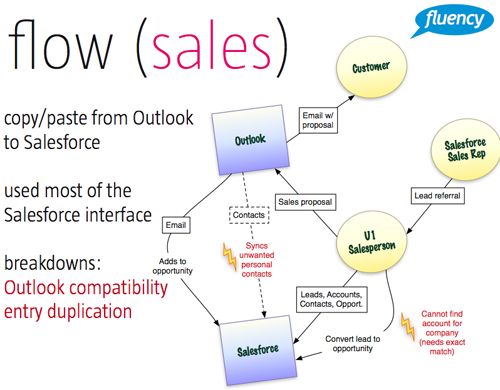

A social website designed for groups to share and reflect on experiences together.
As design lead, I strive to incorporate human-centered methods from the Design department with the Contextual Design process we are taught in HCI. In the beginning, everybody had a different idea of what the problem looked like, so I had the team create a territory map to get on the same page.
Before our Contextual Inquiries (CIs) were arranged for field research, I wanted to keep the group busy with other exploratory research. We conducted Heuristic Evaluations of natural language systems on the web to find out what was currently being done well–and what wasn't.
When our CIs got underway, we focused on looking for similarities between the different user groups of Salesforce. I think it pays to stay broad in the beginning until you get a little information about the situation, or you may miss something important.
After two CIs it was apparent that it would not be feasible to design for multiple user groups with our time constraints, and we narrowed our focus for future research. A solution can be designed for a specific user group while being extensible to others.
We are now compiling our research from the spring semester, and will be designing and developing a working prototype to deliver to Salesforce as we go full-time on the project over the summer.